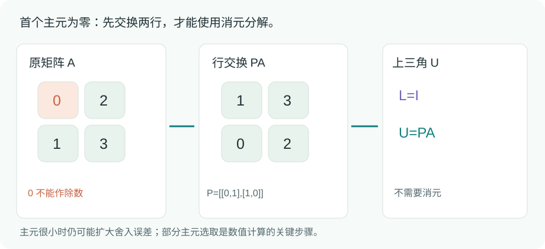

01 / 为什么主元为零，方程依然有唯一解？
看矩阵 A=[[0,2],[1,3]]：若高斯消元从第一行直接开始，第一个主元等于 0，无法进行除法。但 det(A)=−2 并不为零，矩阵完全可逆。需要调整的是消元所选行，而不是放弃解方程。

(8.1)
当分解中存在行交换时，必须把同样的置换施加到右端项：解 Ax=b 等价于先解 Ly=Pb，再解 Ux=y。
02 / 消元乘子为什么要储存在 L 中？
不需要行交换时，若第一主元非零，则可以从第二行减去第一行的 m₂₁=a₂₁/a₁₁ 倍。这个乘子不能丢，它被储存在 L 的次对角元里。选 A=[[2,1],[4,3]]，消元乘子是 2，得到：
(8.2)
分解一次、重复求解多组右端项是 LU 的核心使用场景。L 的前代与 U 的回代都具有三角结构，不必显式计算 A⁻¹。
03 / 部分主元选取实际在选择什么？
标准部分主元选取在当前列尚未消元的行中选择绝对值最大的候选主元，必要时交换整行。这会使标准消元乘子绝对值不超过 1，并缓解除以微小数导致的舍入误差放大。
部分主元选取不是万能保证：某些矩阵仍会在消元过程中发生很大的元素增长；当问题条件数巨大时，前向相对误差也可能较大。应同时区分问题的病态性、算法的后向稳定性、浮点实现。
04 / 正定矩阵能否走更简洁的路径？
若 A 为实对称正定矩阵，则存在唯一的正对角下三角矩阵 L，使得 A=LLᵀ，即 Cholesky 分解。以 A=[[4,2],[2,3]] 为例，L=[[2,0],[1,√2]]；逐项相乘即可验证。它利用了对称性，通常比通用密集 LU 更高效。
(8.3)
正半定不一定足够；当矩阵奇异时，标准无主元 Cholesky 可能遇到零对角元。必须先明确实对称/复 Hermitian 正定的前提。
05 / 实现一个可核查的 2×2 解法
def solve2(A,b):
a=[list(map(float,row)) for row in A]
y=list(map(float,b))
if abs(a[1][0])>abs(a[0][0]):
a[0],a[1]=a[1],a[0]
y[0],y[1]=y[1],y[0]
if a[0][0]==0: raise ValueError("zero pivot")
factor=a[1][0]/a[0][0]
a[1][1]-=factor*a[0][1]
y[1]-=factor*y[0]
if a[1][1]==0: raise ValueError("singular")
x1=y[1]/a[1][1]
x0=(y[0]-a[0][1]*x1)/a[0][0]
return x0,x1
x=solve2(((0,2),(1,3)),(4,7))
assert x==(1.0,2.0)
print(x)预期输出 (1.0, 2.0)。仅适用于固定的小例子；工业级密集线性方程组宜使用经过验证的 LAPACK 例程，奇异性检测也应结合数值尺度而非严格比较浮点数为零。